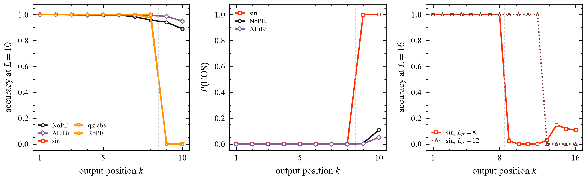
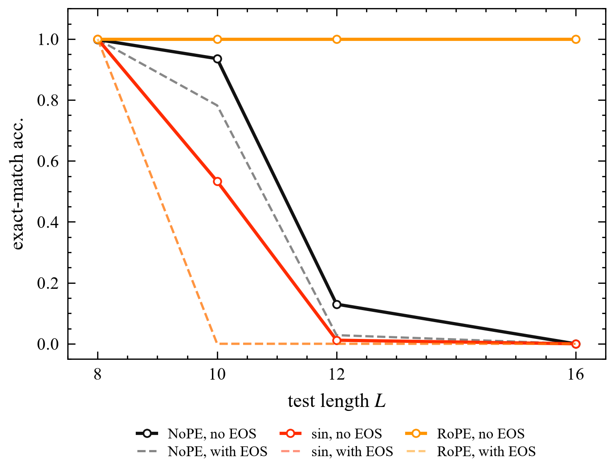

Termination, not position range, drives length-generalisation failure · 2026
A decoder trained on sequences of length eight fails on sequences of length sixteen. That failure is usually blamed on positional encodings: explicit codes put the model at positions it never saw. We show the comparison is confounded by a different decision — where to emit the end-of-sequence token.
With an explicit code the model terminates at exactly the training length, with EOS probability 1.00 at that position, so every longer answer is truncated there. Sequence exact match then reports 0.00 for a model that computes almost everything correctly. Under a forced output length the same checkpoints recover 0.91–0.99 token accuracy. Removing EOS supervision altogether reverses the ranking: rotary copy is perfect at L=16, twice the training length, while NoPE falls to 0.43.

Copy task, fixed-length protocol, mean over two seeds. Every position occurs in every training example. Acc is sequence exact match, Tok per-token accuracy, forced is exact match with EOS masked so generation cannot stop early, and stop is the mean index of the first predicted EOS.
| Encoding | Acc | Tok | Forced | Stop |
|---|---|---|---|---|
| NoPE | 0.78 | 0.98 | 0.99 | 9.9 |
| ALiBi | 0.92 | 0.99 | 1.00 | 9.9 |
| learned | 0.00 | 0.81 | 0.83 | 8.0 |
| sin | 0.00 | 0.80 | 0.93 | 8.0 |
| q/k-absolute | 0.00 | 0.80 | 0.91 | 8.0 |
| RoPE | 0.00 | 0.80 | 1.00 | 8.0 |
Every code with an addressable boundary stops at exactly Ltr=8 at every test length; its token accuracy is then 0.80 — eight tokens out of ten — while exact match reads 0.00.

git clone https://github.com/lvdousha26/positional-lookup
cd positional-lookup
pip install -r requirements.txt
# the decomposition: per-position accuracy, EOS probability, forced length
python code/run_padded.py --tasks copy --pes nope,alibi,sin,qk_abs,rope --seeds 0,1
python code/analyze_padded.py
# the causal test: no EOS supervision at all
python code/probe_noeos.py --pes nope,sin,rope --seeds 0,1
python code/plot_figs.py && cd paper && latexmk -pdf main.texThe three injection sites, the cancellation of any logits bias that is constant along the key axis, and the definitions of truncation and addressability are formalised in Lean 4 and checked in CI. The empirical claims — where generation stops, and what happens when EOS is removed — are not formalised: they are measurements, not theorems.
@article{stops_at_eight_2026,
title = {The Answer Stops at Eight: Termination, Not Position Range,
Drives Length-Generalisation Failure},
author = {Anonymous},
year = {2026},
note = {Code: https://github.com/lvdousha26/positional-lookup}
}